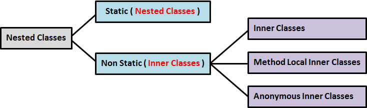

Javaالكلاسات المتداخلة في جافا
مفهوم الـ Nested Classes في جافا
جافا تسمح لك بتعريف العدد الذي تريده من المتغيرات و الدوال بداخل الكلاس كما أنها تسمح لك بتعريف كلاس بداخل نفس الكلاس.
إذاً Nested Classes تعني كلاسات متداخلة, أي تعريف كلاس بداخل كلاس آخر.
هنا قمنا بتعريف كلاس إسمه A يحتوي على كلاس إسمه B.
المثال الأول
A.java
class A {
class B {
}
}
الكلاس مهما كان نوعه يمكنه أن يحتوي على متغيرات و دوال و كلاسات متداخلة.
هنا قمنا بتعريف كلاس إسمه A يحتوي على متغير إسمه x, دالة إسمها print(), و كلاس إسمه B.
المثال الثاني
A.java
class A {
int x;
public void print() {
System.out.println("class A");
}
class B {
}
}
يمكنك وضع العدد الذي تريده من الكلاسات المتداخلة بداخل بعض.
هنا قمنا بتعريف كلاس إسمه A يحتوي على إثنين كلاس و هما B و C.
C يحتوي أيضاً على كلاس إسمه D.
المثال الثالث
A.java
class A {
class B {
}
class C {
class D {
}
}
}
فوائد الـ Nested Classes في جافا
طريقة يمكن اتباعها لتصنيف الكلاسات ضمن مجموعات بشكل منطقي.
فمثلاً في حال كان الكلاس مصمم خصيصاً لكلاس آخر, فإنه من المنطق تعريف هذين الكلاسات مع بعضهما في نفس المجموعة.
من أجل تغليف البيانات Encapsulation بشكل أقوى. حيث أنه يمكنك تعريف الكلاس الداخلي كـ private و جعله فقط متاحاً أمام الكلاس الذي تم تعريفه بداخله.
لتسهيل معرفة الفائدة من الكلاس. فالـ Outer Class في العادة يتم إعطائه إسم يشير إلى الفائدة من أي كلاس موجود بداخله.
أنواع الـ Nested Classes في جافا
الـ Nested Classes ينقسمون إلى نوعين أساسيين و هما:

مصطلحات تقنية
الكلاس الذي يحتوي على كلاس أو أكثر يسمى Outer Class.
الكلاس الموجود بداخل كلاس آخر يسمى Nested Class إذا كان نوعه static.
الكلاس الموجود بداخل كلاس آخر و الغير معرف كـ static يسمى Inner Class.
و لا يهم إن كان معرفاً كـ public, private, protected أو package private.
أمثلة
هنا قمنا بتطبيق مبدأ الـ Static Nested Classes.
المثال الأول
public class A { // B بالنسبة للكلاسات Outer Class يعتبر A الكلاس
static class B { // static لأنه معرف كـ A بالنسبة للكلاس Nested Class يعتبر B الكلاس
}
}
هنا قمنا بتطبيق مبدأ الـ Non Static Nested Classes.
المثال الثاني
public class A { // F و D ,C ,B بالنسبة للكلاسات Outer Class يعتبر A الكلاس
public class B { // static لأنه غير معرف كـ A فقط بالنسبة للكلاس Inner Class يعتبر B الكلاس
}
private class C { // static لأنه غير معرف كـ A فقط بالنسبة للكلاس Inner Class يعتبر C الكلاس
}
protected class D { // static لأنه غير معرف كـ A فقط بالنسبة للكلاس Inner Class يعتبر D الكلاس
}
class E { // static لأنه غير معرف كـ A فقط بالنسبة للكلاس Inner Class يعتبر E الكلاس
}
}
التعامل مع الـ Static Nested Classes في جافا
Static Nested Class أو Nested Class عبارة عن كلاس يمكن الوصول له مباشرةً من الـ Outer Class دون حاجة إلى إنشاء كائن منه.
و يمكنه إحتواء متغيرات, دوال, و كلاسات أخرى و التي بدورها يمكن أن تكون معرفة كـ static أيضاً.
الأشياء المعرفة فيه كـ static, يمكن الوصول لها مباشرةً منه.
بينما الأشياء الغير المعرفة فيه كـ static, يمكن الوصول لها فقط من خلال إنشاء كائن منه.
مثال
A.java
public class A { // A إسمه Outer Class هنا قمنا بتعريف
static class B { // B إسمه Nested Class هنا قمنا بتعريف
public int x; // static لأنه غير معرف كـ B هذا المتغير يمكن الوصول له فقط من خلال كائن من الكلاس
public static int y; // static لأنه معرف كـ A.B.y هذا المتغير يمكن الوصول له مباشرةً هكذا
public void printX() { // static لأنها غير معرفة كـ B هذه الدالة يمكن الوصول لها فقط من خلال كائن من الكلاس
System.out.println("x contain: " + x);
}
public static void printY() { // static لأنها معرفة كـ A.B.printY() هذه الدالة يمكن الوصول لها مباشرةً هكذا
System.out.println("y contain: " + y);
}
}
}
Main.java
public class Main {
public static void main(String[] args) {
A.B obj = new A.B(); // obj إسمه A الموجود بداخل الكلاس B هنا قمنا بإنشاء كائن من الكلاس
obj.x = 10; // obj الموجود في الكائن x هنا قمنا بإعطاء قيمة للمتغير
obj.printX(); // obj من خلال الكائن printX() هنا قمنا باستدعاء الدالة
obj.y = 20; // لا تستخدم هذا الأسلوب <--- obj من خلال الكائن y هنا قمنا بإعطاء قيمة للمتغير
obj.printY(); // لا تستخدم هذا الأسلوب <--- obj من خلال الكائن printY() هنا قمنا باستدعاء الدالة
A.B.y = 30; // B بشكل مباشر من الكلاس y هنا قمنا بإعطاء قيمة للمتغير
A.B.printY(); // B بشكل مباشر من الكلاس printY() هنا قمنا باستدعاء الدالة
}
}
•سنحصل على النتيجة التالية عند التشغيل.
x contain: 10
y contain: 20
y contain: 30
إذا أردت الوصول لمحتويات كلاس نوعه static يفضل الوصول لهم من الكلاس مباشرةً و ليس من خلال كائن من الكلاس الذي يحتويهم.
إذا عدنا للكود السابق, في الكلاس Main, في السطرين 12 و 13 تحديدياً, ننصحك بالتالي:
إعتماد A.B.y بدل obj.y.
إعتماد A.B.printY() بدل obj.printY().
يفضل إتباع هذه النصائح دائماً لجعل برامجك أفضل من ناحية الأداء و السرعة.
كان بإمكانك أيضاً إنشاء الكائن obj بطريقة أخرى.
شاهد المثال »
التعامل مع الـ Non Static Nested Classes في جافا
Non Static Nested Class أو Inner Class عبارة عن كلاس يمكن الوصول له و لمحتوياته فقط من خلال كائن.
و يمكنه إحتواء متغيرات, دوال, و كلاسات أخرى أيضاً.
لا يمكن تعريف أي شيء فيه كـ static لأنه لا يمكن الوصول له إلا من خلال كائن.
أنواع الـ Inner Classes
الـ Inner Classes ينقسمون إلى ثلاث أنواع أساسية على حسب طريقة تعريفك لهم:
التعامل مع الـ Inner Classes في جافا
الـ Inner Class عبارة عن كلاس معرف بداخل كلاس.
الـ Inner Class يمكن أن يكون معرف كـ public أو private أو protected أو package private.
الـ Modifier الذي تستخدمه عند تعريف الكلاس يحدد الطرق التي يمكنك من خلالها الوصول لهذا الكلاس.
مثال
•لنفترض أنه عندنا OuterClass إسمه a بداخله InnerClass إسمه B.
class A { // OuterClass
class B { // InnerClass
}
}
•هكذا ننشئ كائن من الكلاس B.
A a = new A(); // OuterClass أولاً: ننشئ كائن من الـ
A.B b = a.new B(); // InnerClass ثانياً: ننشئ كائن من الـ
•و يمكنك إنشاء كائن من الكلاس B بأمر واحد.
A.B b = new A().new B();
أمثلة شاملة
هنا قمنا بتعريف الـ Inner Class كـ public.
شاهد المثال »
هنا قمنا بتعريف الـ Inner Class كـ private.
شاهد المثال »
التعامل مع الـ Method Local Inner Classes في جافا
في جافا, يمكنك تعريف كلاس جديد بداخل دالة, و عندها يعتبر هذا الكلاس local Class فيها. بمعنى أنه يمكن الوصول له فقط من خلالها, حيث أنه يمكن إنشاء كائن من هذا الكلاس بداخلها فقط.
في المثال التالي قمنا بتعريف Outer Class إسمه a, يحتوي على دالة إسمها displayInnerClass().
الدالة displayInnerClass() تحتوي على كلاس إسمه B, و الذي بدوره يحتوي على دالة إسمها print().
بعد تعريف الكلاس B قمنا بإنشاء كائن منه لإستدعاء الدالة print() في داخل الدالة displayInnerClass().
إذاً الفكرة هنا هي تعريف كلاس و إنشاء كائن منه بداخل دالة.
مثال
A.java
public class A { // A إسمه Outer Class هنا قمنا بتعريف
// هنا قمنا بتعريف دالة تنشئ كلاس يحتوي على دالة أيضاً. ثم تنشئ كائن من الكلاس و تستدعي الدالة الموجودة فيه
public void displayInnerClass() {
class B { // B هنا قمنا بتعريف كلاس إسمه
void print() { // print() يحتوي على الدالة B
System.out.println("B is a Local Inner Class");
}
}
B b = new B(); // B هنا قمنا بإنشاء كائن من الكلاس
b.print(); // B الموجودة في الكلاس print() هنا قمنا باستدعاء الدالة
}
}
Main.java
public class Main {
public static void main(String[] args) {
// منه displayInnerClass() ثم قمنا باستدعاء الدالة A هنا قمنا بإنشاء كائن من الكلاس
A a = new A();
a.displayInnerClass();
}
}
•سنحصل على النتيجة التالية عند التشغيل.
B is a Local Inner Class
التعامل مع الـ Anonymous Inner Classes في جافا
في حال كنت تريد إستخدام إنترفيس بدون أن تنشئ كلاس و تجعله ينفّذه, أو كنت تريد إستخدام كلاس نوعه abstract بدون أن تنشئ كلاس يرث منه يمكنك الإستفادة من أسلوب الـ Anonymous Inner Class.
إذاً فكرة الـ Anonymous Inner Class هي إنشاء كائن يحتوي على الأشياء الموجودة في كلاس ما بدون أن يفعل له extends, أو إنشاء كائن يحتوي على الأشياء الموجودة في إنترفيس ما بدون أن يفعل له implements.
لا تنسى أنه عند إعتماد هذا الأسلوب فإنك لا زلت مجبراً على أن تفعل Override لكل دالة نوعها abstract.
طريقة تعريف Anonymous Class
في البداية عليك أن تفعل import للكلاس أو الإنترفيس الذي تنوي إنشاء كائن منه في حال كنت تستخدم كلاس جاهز من الكلاسات الموجودة في جافا.
لتعريف Anonymous Class, عليك إنشاء كائن من كلاس معين, ثم فتح أقواس البداية و النهاية بعد الكونستركتور, و تعريف الـ Anonymous Class بداخله.
أمثلة شاملة
هنا وضعنا أمثلة مهمة تعلمك طريقة التعامل و الإستفادة من الـ Anonymous Class.
شاهد الأمثلة »
هنا وضعنا مثال طبقنا فيه مفهوم الـ Anonymous Class و مثال طبقنا فيه مفهوم الـ Anonymous Object.
شاهد المثال »

 محرر الويب
محرر الويب نظام الألوان
نظام الألوان محول الوحدات
محول الوحدات محلل عناوين الشبكات
محلل عناوين الشبكات